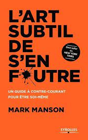

ISBN: 2212567596
Titre:L’art subtil de s’en foutre
auteurs : Mark Manson
Ecrivain: Mark Manson
Illustrateur : Mark Manson
Traducteur : Mark Manson
L’éditeur : EYROLLES
Genre : Psychologie, Développement personnel
Date: 2016
Page: 188
langue: Français
Resumé: he Subtle Art of Not Giving a F*ck" est un livre de développement personnel écrit par Mark Manson. L'auteur propose une approche non conventionnelle de la recherche du bonheur en se concentrant sur l'idée que la vie est remplie de défis, d'incertitudes et de douleur, et que c'est en acceptant ces aspects inévitables de l'existence que l'on peut réellement s'épanouir. Manson encourage les lecteurs à identifier leurs valeurs personnelles, à faire des choix significatifs et à se concentrer sur ce qui compte vraiment pour eux, tout en laissant de côté les préoccupations inutiles et les attentes irréalistes. Le livre promeut l'idée que la croissance personnelle et le bonheur découlent de l'acceptation de la réalité telle qu'elle est, tout en s'efforçant d'améliorer sa propre situation.
